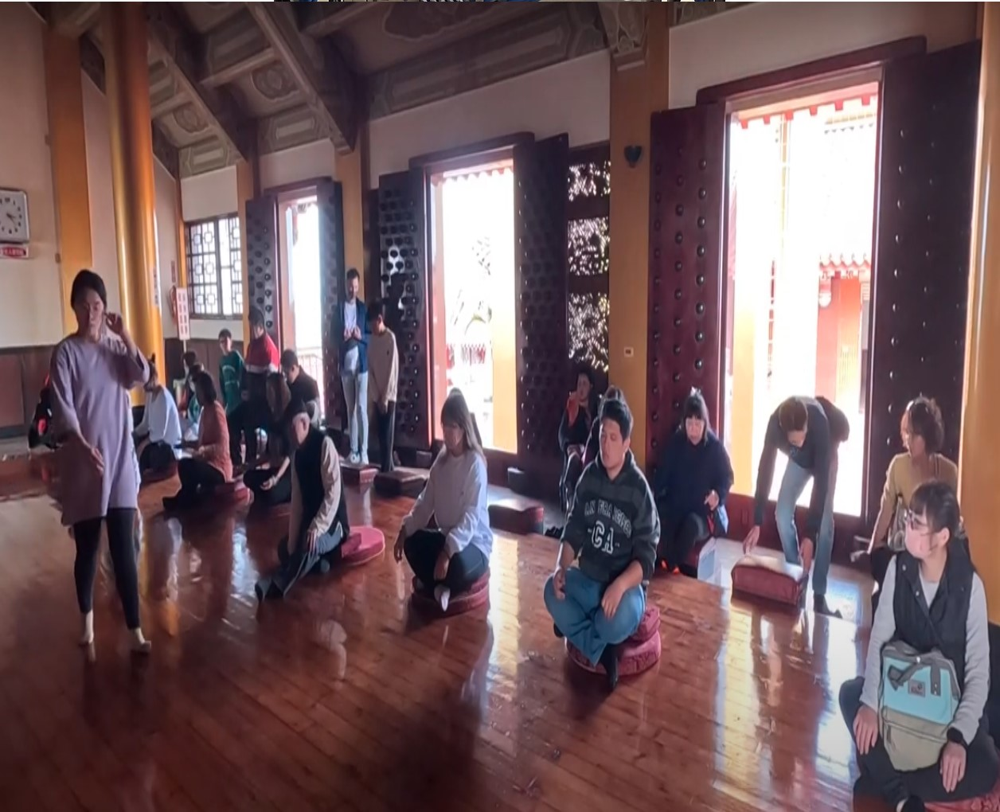

關於我們
About Us
由於創辦前長期致力於研究徘徊於世間的亡者之魂，在大地森林中生息的精靈，以及崇高的神佛們，他們被人類稱作為「靈」。在人類的世界裡，有少部分的人能夠與他們自由的交流，並且能夠隨意操控某種常人無所可及的力量，這些人便通稱為「通靈人」。
About Us
由於創辦前長期致力於研究徘徊於世間的亡者之魂，在大地森林中生息的精靈，以及崇高的神佛們，他們被人類稱作為「靈」。在人類的世界裡，有少部分的人能夠與他們自由的交流，並且能夠隨意操控某種常人無所可及的力量，這些人便通稱為「通靈人」。
Company milestones
2024-前往日本參與通靈王大戰
2019-公司參與台灣通靈王大戰。
公司通過ISO 9001認證、培訓3名以上通靈人和1名通靈王。2018-公司內部培訓通靈人3名以上，可以承接超靈體。
2016-於元月創辦了天道院科技有限公司，在台南市安定區落地生根、導入神明接觸做為公司營運基準。
Move with the spirit
「靈動」就是靈機一動。「靈體」必須透過「三魂」傳達到知覺「七魄」，才能讓肉體知道，這就是靈體對肉體傳達最直接的溝通與互動方式。 相對地，肉體也必須經由「心念」，傳輸到「三魂七魄」給靈體訊息，所以靈體就是肉體，肉體就是靈體，祂不是別人而是你自己，是一位與你共事、共管、共享、共存的夥伴。
Evil spirits disperse
惡靈退散指的是收驚的意思， 幫助被嚇到的人或是不小心沖犯到神明， 甚至有被邪靈附身所出現的怪事， 都藉由乩童上身或是符水.咒語， 來讓這些居民可以得到安心。 不論咒語式或是符籙式及香米式的收驚程序， 大約都是施者要先膜拜佛教、 道教神祇請求幫忙、唸咒語及特定的手勢， 咒語或咒語式為收驚必要程序， 然後用來趕走這些不好的東西。
Open the eye of heaven
所謂天眼的功能，是能見肉眼所不能見的事物，除了不受大小、距離、明暗的限制外，也不受遮隔隱藏或通透顯露的限制，它不需通過光影的反映，而是精神力的反射或折射作用。 天眼有修得和報得的不同。 一般的鬼神都有深淺程度不等的天眼，稱為報得。 因為沒有肉體束縛的鬼神，只有靈力活動，減少了物體障礙
Network Engineering
本中心提供完整的珠寶、寶石與礦物鑑定服務，除常見的鑽石、彩寶與翡翠玉石外，針對壽山石、雞血石、隕石、貴金屬等特殊檢驗項目均提供鑑定服務。本所證書可分三類，包含彩色寶石鑑定證書、鑽石分級證書與貴重金屬檢驗報告等。彩色寶石鑑定證書詳細描述寶石的品種、性質、優化處理或產地等資訊，可做為買賣雙方交易之參考；鑽石分級證書是將未鑲嵌的白鑽裸石以國際4C標準(顏色、重量、淨度與車工)分級後，詳載於報告上；貴重金屬檢驗報告則是清楚標示受測樣本的貴金屬成分分析結果。 台灣聯合鑑定中心寶石鑑定證書封面呈現如紅寶般的豔麗紅色，封套內頁以英文、繁體中文、簡體中文以及日文等四種語言簡述本中心珠寶玉石鑑定報告的開立準則與法律聲明。本所證書內文均清楚標示物件的重量、尺寸、性質，且均標註是否經優化處理。
Fiber Engineering
01
收/寄件人
請填寫本公司收件人, 地址, 電話
與您的姓名, 地址, 電話
02
日期
收件時間請避開六日與國定假日
03
個人資訊
請在包裹內附您個人的收件資訊
(姓名, 電話, 地址)
04
費用
現金支付者請將費用宜並放入包裹
電子支付者